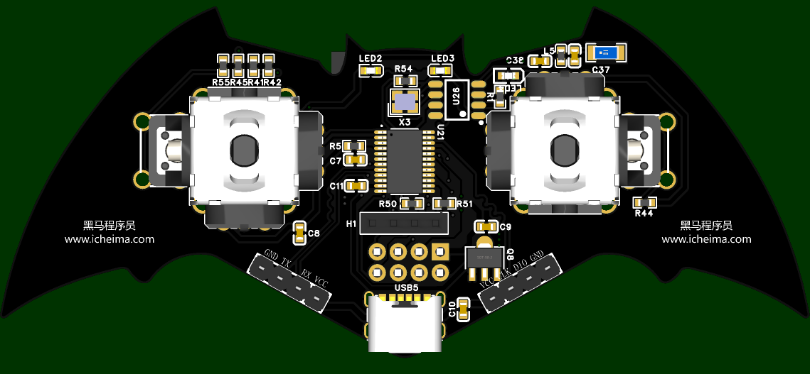
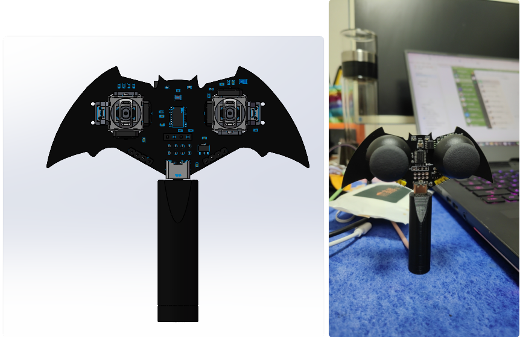

<!DOCTYPE lake>
<p data-lake-id="u992756c1" id="u992756c1" style="text-align: center"></p><p data-lake-id="u9206ef9d" id="u9206ef9d" style="text-align: center"><a class="yuque-card-link" href="../../_assets/2d6d7ab9f22d36ebb2741bd7.pdf">蝙蝠遥控器手柄.pdf</a></p><p data-lake-id="uc54d3082" id="uc54d3082" style="text-align: center"><br/></p><p data-lake-id="u02a19a8d" id="u02a19a8d" style="text-align: left"><span data-lake-id="u0b2b6e20" id="u0b2b6e20">本章我们介绍如何使用CW32开发一款遥控器, 可用于控制我们之前课程中的小车</span></p><p data-lake-id="u1f34f0cb" id="u1f34f0cb" style="text-align: left"><span data-lake-id="u5f89b1a6" id="u5f89b1a6">​</span><br/></p><p data-lake-id="u3ed89606" id="u3ed89606" style="text-align: center"></p><h1 data-lake-id="article-title" id="article-title"><span data-lake-id="u18af72bd" id="u18af72bd" style="color: var(--yq-text-primary)">原理图</span></h1><p data-lake-id="u88e58a2e" id="u88e58a2e"><span data-lake-id="ud166dd9a" id="ud166dd9a" style="color: var(--yq-text-link)">蝙蝠遥控器手柄.pdf</span><span data-lake-id="u06d15518" id="u06d15518" style="color: var(--yq-text-link)">(374 KB)</span></p><p data-lake-id="u934c2f2b" id="u934c2f2b"><span data-lake-id="u13a35635" id="u13a35635" style="color: rgb(38, 38, 38)"><br><br/></br></span><span class="lake-fontsize-18" data-lake-id="u0a42b4c3" id="u0a42b4c3" style="color: rgb(38, 38, 38)"><br/></span><span data-lake-id="u8beca6e9" id="u8beca6e9" style="color: rgb(38, 38, 38)"><br/><br/><br/></span></p><p data-lake-id="u5b9d3159" id="u5b9d3159"><span data-lake-id="uc1e5bb44" id="uc1e5bb44" style="color: var(--yq-text-primary)"><br/><br/></span></p>